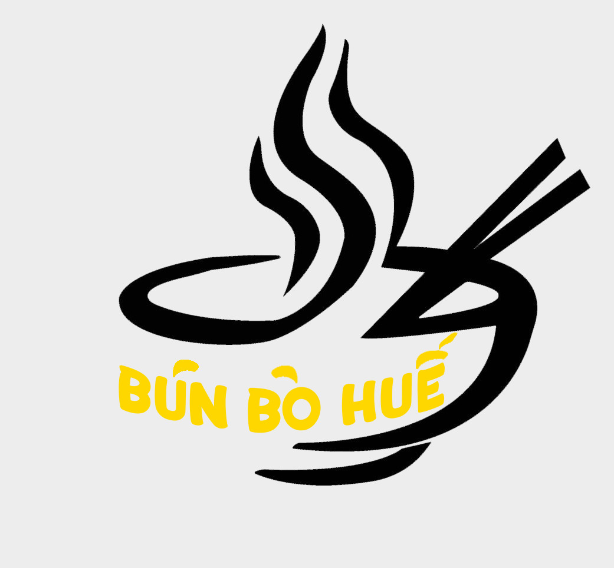
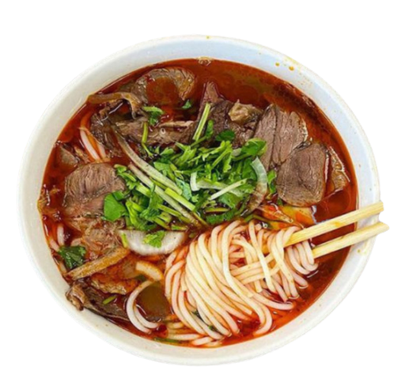
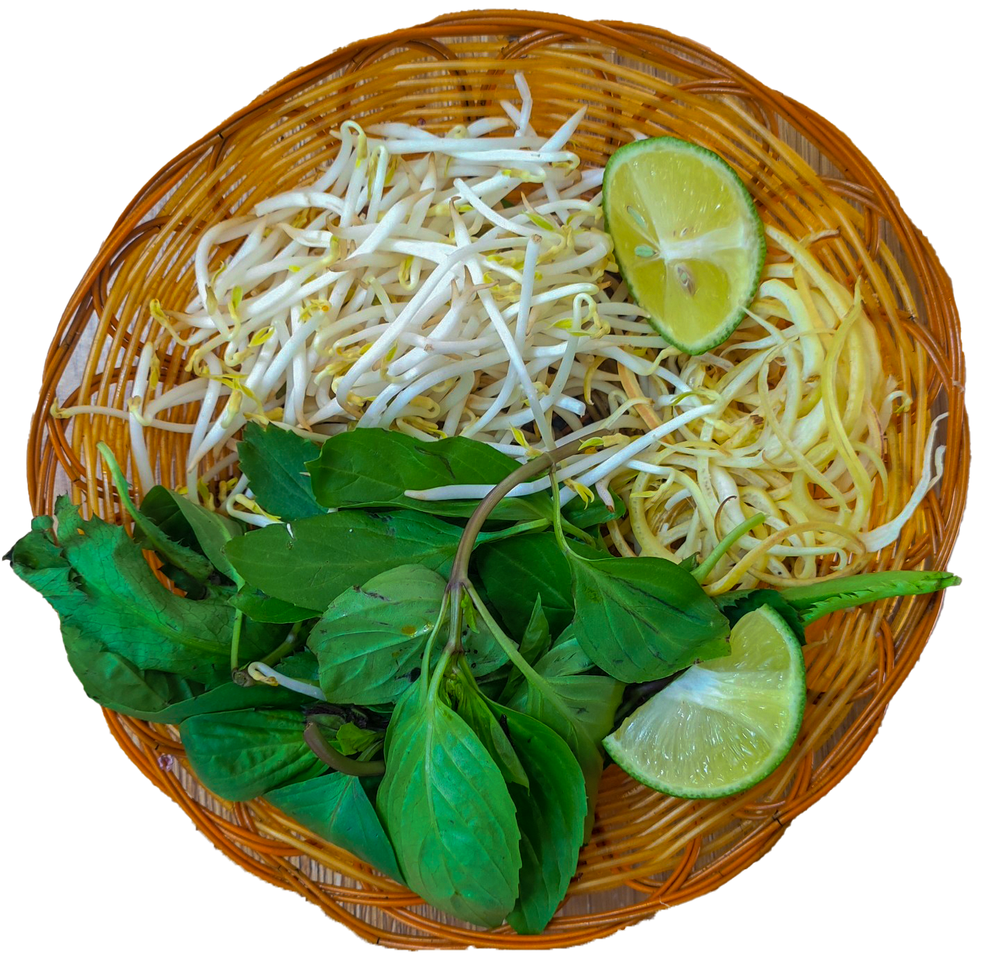
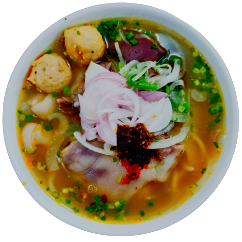
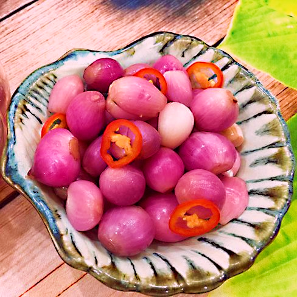
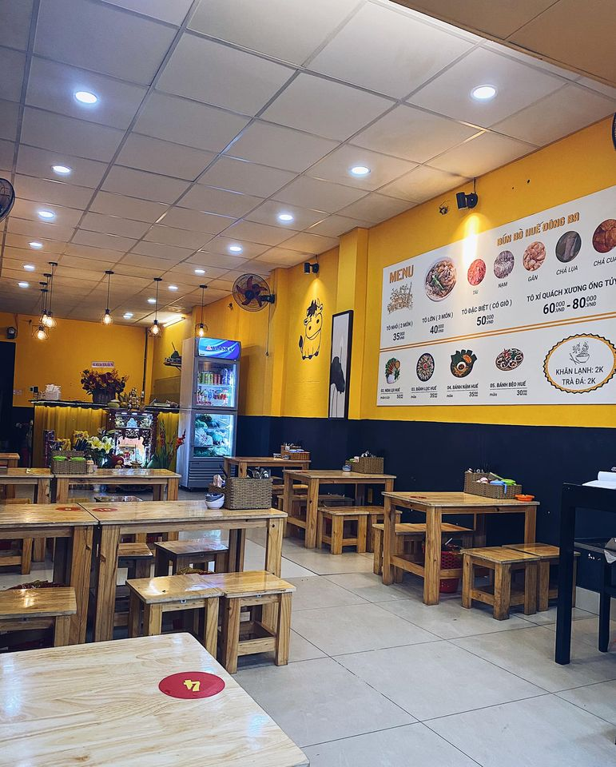
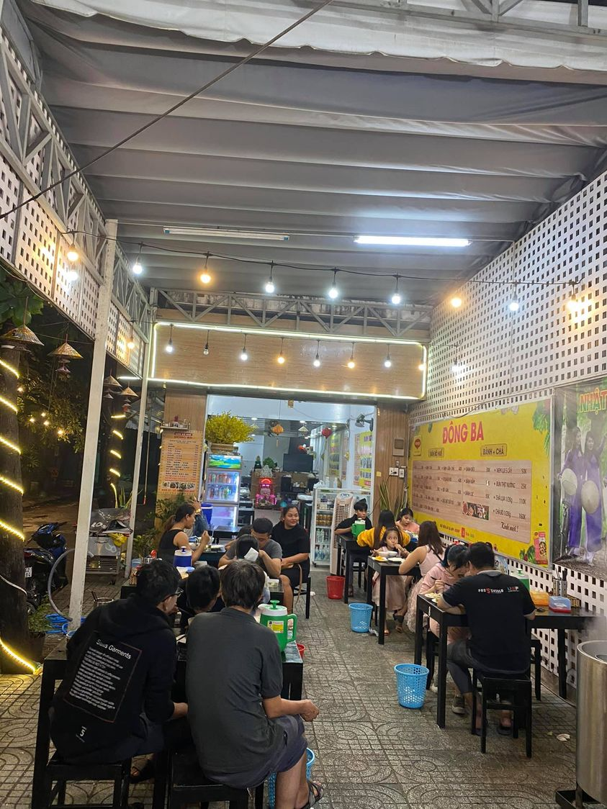

Bún Bò Huế
Đậm Chất Tình Huế
.png )
Hành muối chua là nguyên liệu không thể thiếu trong món bún bò Huế, tạo nên vị chua ngọt mặn đặc trưng và hương vị riêng biệt cho món ăn. Hành muối chua mang đến sự thơm ngon, đậy mùi đặc trưng và trải nghiệm ẩm thực khó quên cho thực khách.

BÚN BÒ HUẾ có tô bún bò Huế đặc biệt với hương vị thơm ngon, được làm từ nước dùng đậm đà, thịt bò mềm, bánh phở cơm dai ngon, chả Huế thơm ngon, hành tây, rau thơm xanh tươi và được trang trí đẹp mắt.

Rau sống là một phần không thể thiếu trong to bún bò , bao gồm các loại rau tươi và cung cấp sẵn, giúp tăng thêm hương vị đối với món ăn. Rau cũng là một lựa chọn tốt cho sức khỏe và đảm bảo cân bằng dinh dưỡng khi ăn tô bún bò Huế.
BÚN BÒ HUẾ có tô bún bò Huế đặc biệt với hương vị thơm ngon, được làm từ nước dùng đậm đà, thịt bò mềm, bánh phở cơm dai ngon, chả Huế thơm ngon, hành tây, rau thơm xanh tươi và được trang trí đẹp mắt.
Rau sống là một phần không thể thiếu trong to bún bò , bao gồm các loại rau tươi và cung cấp sẵn, giúp tăng thêm hương vị đối với món ăn. Rau cũng là một lựa chọn tốt cho sức khỏe và đảm bảo cân bằng dinh dưỡng khi ăn tô bún bò Huế.
Hành muối chua là nguyên liệu không thể thiếu trong món bún bò Huế, tạo nên vị chua ngọt mặn đặc trưng và hương vị riêng biệt cho món ăn. Hành muối chua mang đến sự thơm ngon, đậy mùi đặc trưng và trải nghiệm ẩm thực khó quên cho thực khách.
Xem Tiếp

Bún Bò Huế có sợi bún to hơn so với các loại bún khác trên cả nước.
Sợi bún được làm từ bột gạo và bột lọc theo tỉ lệ chuẩn để có độ mềm và dai vừa phải.
Bát bún Bò Huế bao gồm nhiều loại nguyên liệu như thịt bò, giò heo, chả cua...
Trong đó, thịt bò được lựa chọn từ nhiều loại như bắp, nạm, gân...
Đây là những nguyên liệu không thể thiếu trong món ăn này, bất kể giá cả.
Nước dùng là linh hồn của Bún Bò Huế.
Nước dung được ninh từ sương ống bò, kết hợp với mắm ruốc,
sả cây và các nguyên liệu khác để tạo ra hương vị đậm đà, đầy màu sắc cho món ăn.
Trong bún bò Huế, hành muối chua được sử dụng như một nguyên
liệu quan trọng để tăng cường hương vị.Chúng tôi chọn loại hành tươi,
với cách muối truyền thống mang lại cảm giác đậm đà khi ăn kèm.

Rau ăn kèm gồm giá đỗ, hoa chuối và lộc quế đều là đồ tươi ngon
cung cấp mùi vị đầy đủ hơn khi ăn kèm.
Nó tăng cường lượng Natri khiến mùi vị sợi bún thêm hấp dẫn


Bún Bò Huế
Nhà hàng bún bò Huế là nơi bạn có thể thưởng thức món ăn đặc trưng của xứ Huế mà không cần phải đến miền Trung.
Tại đây, chúng tôi chuyên cung cấp các món ăn ngon, đậm đà vị miền Trung như bún bò, bánh bèo, nem lụi..
Cùng với không gian ấm cúng, thân thiện và phục vụ chuyên nghiệp, nhà hàng bún bò Huế hy vọng sẽ mang đến cho quý khách một trải nghiệm thưởng thức ẩm thực đầy trọn vẹn.
Hãy đến và thử ngay món bún bò Huế của chúng tôi để cảm nhận sự khác biệt!
Cơ sở 1 : Số 16 Trịnh Văn Bô
Cơ sở 2 : Số 63 Nguyễn Chí Thanh
Bún Bò Huế
SĐT:0386117963